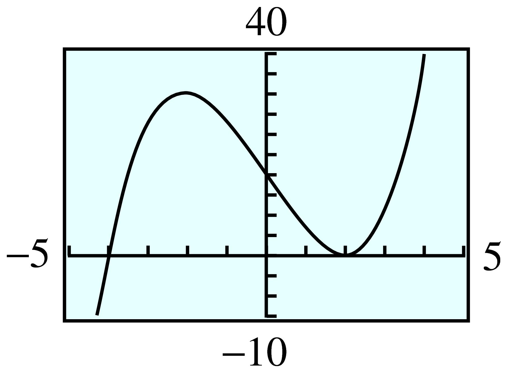

Example7.24
Graph the cubic polynomial \(P(x) = x^3 - 4x\) and compare its graph with that of the basic cubic, \(y = x^3\text{.}\)
In Section 7.1, we considered applications of polynomial functions. Although most applications use only a portion of the graph of a particular polynomial, we can learn a lot about these functions by taking a more global view of their behavior.
The graph of a polynomial function depends first of all on its degree. We have already studied the graphs of polynomials of degrees \(0\text{,}\) \(1\text{,}\) and \(2\text{.}\)
Quadratic functions, such as \(f(x) = -2x^2 + 6x + 8\text{,}\) are polynomials of degree \(2\text{.}\) The graph of every quadratic function is a parabola, with the same basic shape as the standard parabola, \(y = x^2\text{.}\) (See Figure 7.23.) It has one turning point, where the graph changes from increasing to decreasing or vice versa. The turning point of a parabola is the same as its vertex.
Do the graphs of all cubic, or third-degree, polynomials have a basic shape in common? We can graph a few examples and find out. Unlike the basic parabola, the graph of \(y = x^3\) is always increasing. At the origin, however, it changes from concave down to concave up. A point where the graph changes concavity is called an inflection point.
Graph the cubic polynomial \(P(x) = x^3 - 4x\) and compare its graph with that of the basic cubic, \(y = x^3\text{.}\)
Despite the differences in the central portions of the two graphs, they exhibit similar long-term behavior.
All cubic polynomials display this behavior when their lead coefficients (the coefficient of the \(x^3\) term) are positive.
Now let’s compare the long-term behavior of two quartic, or fourth-degree, polynomials.
Graph the polynomials \(f(x) = x^4 - 10x^2 + 9\) and \(g(x) = x^4 + 2x^3\text{,}\) and compare.
In Examples 24 and 7.27, we have seen polynomials of degree 3, whose graphs have a characteristic shape, illustrated in Figure 7.30a, and polynomials of degree 4, whose graphs are illustrated by Figure 7.30b. In the exercises, you will consider more graphs to help you verify the following observations.
A polynomial of odd degree (with positive lead coefficient) has negative \(y\)-values for large negative \(x\) and positive \(y\)-values for large positive \(x\text{.}\)
A polynomial of even degree (with positive lead coefficient) has positive \(y\)-values for both large positive and large negative \(x\text{.}\)
Another way to describe the long-term behavior of a polynomial graph is to note that for large values of \(\abs{x}\text{,}\) the shape is similar to a power function of the same degree. It is the presence of the lower-degree terms in the polynomial that are responsible for any extra wiggles or turning points in the graph.
In Chapter 6, we saw that the x-intercepts of a quadratic polynomial, \(f(x) = ax^2 + bx + c\text{,}\) occur at values of \(x\) for which \(f(x) = 0\text{,}\) that is, at the real-valued solutions of the equation \(ax^2 + bx + c = 0\text{.}\) The same holds true for polynomials of higher degree.
Solutions of the equation \(P(x) = 0\) are called zeros of the polynomial \(P\text{.}\) In Example 7.24, we graphed the cubic polynomial \(P(x) = x^3 - 4x\text{.}\) Its \(x\)-intercepts are the solutions of the equation \(x^3 - 4x = 0\text{,}\) which we can solve by factoring the polynomial \(P(x)\text{.}\)
\begin{align*} x^3 - 4x \amp= 0\\ x(x - 2)(x + 2) \amp= 0 \end{align*}The zeros of \(P\) are \(0\text{,}\) \(2\text{,}\) and \(-2\text{.}\) Each zero of \(P\) corresponds to a factor of \(P(x)\text{.}\) This result suggests the following theorem, which holds for any polynomial \(P\text{.}\)
Let \(P(x)\) be a polynomial with real number coefficients. Then \((x - a)\) is a factor of \(P(x)\) if and only if \(P(a) = 0\text{.}\)
The factor theorem follows from the division algorithm for polynomials. We will consider both of these results in more detail in the Homework problems.
Because a polynomial function of degree \(n\) can have at most \(n\) linear factors of the form \((x - a)\text{,}\) it follows that \(P\) can have at most \(n\) distinct zeros.
Another way of saying this is that if \(P(x)\) is a polynomial of \(n\)th degree, the equation \(P(x) = 0\) can have at most \(n\) distinct solutions, some of which may be complex numbers. (We consider complex numbers in Section 7.3.)
Because only real-valued solutions appear on the graph as \(x\)-intercepts, we have the following corollary to the factor theorem.
A polynomial of degree \(n\) can have at most \(n\) \(x\)-intercepts.
If some of the zeros of \(P\) are complex numbers, they will not appear on the graph, so a polynomial of degree \(n\) may have fewer than \(n\) \(x\)-intercepts.
Find the real-valued zeros of each of the following polynomials, and list the \(x\)-intercepts of its graph.
The appearance of the graph near an \(x\)-intercept is determined by the multiplicity of the zero there. For example, both real zeros of the polynomial \(g(x) = x^4 - 3x^2 - 4\) in Example 7.32b are of multiplicity one, and the graph crosses the \(x\)-axis at each intercept.
However, the polynomial \(f(x) = x^3 + 6x^2 + 9x\) in Example 7.32a has a zero of multiplicity two at \(x = -3\text{.}\) The graph of \(f\) just touches the \(x\)-axis and then reverses direction without crossing the axis.
To understand what happens in general, compare the graphs of the three polynomials in Figure 7.35.
In Figure 7.35a, \(L(x) = x - 2\) has a zero of multiplicity one at \(x = 2\text{,}\) and its graph crosses the \(x\)-axis there.
In Figure 7.35b, \(Q(x) = (x - 2)^2\) has a zero of multiplicity two at \(x = 2\text{,}\) and its graph touches the \(x\)-axis there but changes direction without crossing.
In Figure 7.35c, \(C(x) = (x - 2)^3\) has a zero of multiplicity three at \(x = 2\text{.}\) In this case, the graph makes an S-shaped curve at the intercept, like the graph of \(y = x^3\text{.}\)
Near its \(x\)-intercepts, the graph of a polynomial takes one of the characteristic shapes illustrated in Figure 7.35.
Although we will not consider zeros of multiplicity greater than three, they correspond to similar behavior in the graph: At a zero of odd multiplicity, the graph has an inflection point at the intercept; its graph makes an S-shaped curve. At a zero of even multiplicity, the graph has a turning point; it changes direction without crossing the \(x\)-axis.
Graph the polynomial
\begin{equation*} f(x) = (x + 2)^3(x - 1)(x - 3)^2 \end{equation*}Look up the definitions of new terms in the Glossary.
Degree
Multiplicity
Inflection point
Quartic
Turning point
Cubic
Corollary
Zero
The graphs of all polynomials are smooth curves without breaks or holes.
The graph of a polynomial of degree \(n\) (with positive leading coefficient) has the same long-term behavior as the power function of the same degree.
A polynomial of degree \(n\) can have at most \(n\) \(x\)-intercepts.
At a zero of multiplicity two, the graph of a polynomial has a turning point. At a zero of multiplicity three, the graph of a polynomial has an inflection point.
Describe the graphs of polynomials of degrees \(0\text{,}\) \(1\text{,}\) and \(2\text{.}\)
What does the degree of a polynomial tell you about its long-term behavior?
What is a zero of a polynomial?
How are zeros related to the factors of a polynomial?
What do the zeros tell you about the graph of a polynomial?
Explain the difference between a turning point and an inflection point.
Practice each skill in the Homework problems listed.
Identify \(x\)-intercepts, turning points, and inflection points: #1–8, 11–18
Use a graph to factor a polynomial: #21–28
Sketch the graph of a polynomial: #29–46
Find a possible formula for a polynomial whose graph is shown: #47–52
Graph translations of polynomials: #53–56
In Problems 1–8, use your calculator to graph each cubic polynomial.
Describe the long-term behavior of each graph. How does this behavior compare to that of the basic cubic? How does the sign of the lead coefficient affect the graph?
How many \(x\)-intercepts does each graph have? How many turning points? How many inflection points?
\(y = x^3 + 4\)
\(y = x^3 - 8\)
\(y = -2 - 0.05x^3\)
\(y = 5 - 0.02x^3\)
\(y = x^3 - 3x\)
\(y = 9x - x^3\)
\(y = x^3 + 5x^2 - 4x - 20\)
\(y = -x^3 - 2x^2 + 5x + 6\)
Use a calculator to graph each cubic polynomial.Which graphs are the same?
\(y=x^3-2 \)
\(y=(x-2)^3 \)
\(y= x^3-6x^2+12x-8 \)
\(y = x^3 + 3\)
\(y = (x + 3)^3\)
\(y = x^3 + 9x^2+27x+27\)
In Problems 11–18, use your calculator to graph each quartic polynomial.
Describe the long-term behavior of each graph. How does this behavior compare to that of the basic quartic? How does the sign of the lead coefficient affect the graph?
How many \(x\)-intercepts does each graph have? How many turning points? How many inflection points?
\(y = 0.5x^4 - 4\)
\(y = 0.3x^4 + 1\)
\(y = -x^4 + 6x^2 - 10\)
\(y = x^4 - 8x^2 - 8\)
\(y = x^4 - 3x^3\)
\(y = -x^4 - 4x^3\)
\(y = -x^4 - x^3 - 2\)
\(y = x^4 + 2x^3 + 4x^2 + 10\)
From your answers to Problems 1–8, what you can conclude about the graphs of cubic polynomials? Consider the long-term behavior, \(x\)-intercepts, turning points, and inflection points.
From your answers to Problems 11–18, what you can conclude about the graphs of quartic polynomials? Consider the long-term behavior, \(x\)-intercepts, turning points, and inflection points.
For Problems 21–26,
Use your calculator to graph each polynomial and locate the \(x\)-intercepts. Set \(\text{Xmin} =-4.7\text{,}\) \(\text{Xmax} = 4.7\text{,}\) and adjust Ymin and Ymax to get a good graph.
Write the polynomial in factored form.
Expand the factored form of the polynomial (that is, multiply the factors together). Do you get the original polynomial?
\(P(x) = x^3 - 7x - 6\)
\(Q(x) = x^3 + 3x^2 - x - 3\)
\(R(x) = x^4 - x^3 - 4x^2 + 4x\)
\(S(x) = x^4 + 3x^3 - x^2 - 3x\)
\(p(x) = x^3 - 3x^2 - 6x + 8\)
\(q(x) = x^3 + 6x^2 - x - 30\)
\(r (x) = x^4 - x^3 - 10x^2 + 4x + 24\)
\(s(x) = x^4 - x^3 - 12x^2 - 4x + 16\)
Sketch a rough graph of each polynomial function by hand, paying attention to the shape of the graph near each \(x\)-intercept. Check by graphing with a calculator.
\(q(x) = (x + 4)(x + 1)(x - 1)\)
\(p(x) = x(x + 2)(x + 4)\)
\(G(x) = (x - 2)^2(x + 2)^2\)
\(F(x) = (x - 1)^2 (x - 3)^2\)
\(h(x) = x^3(x + 2)(x - 2)\)
\(H(x) = (x + 1)^3(x - 2)^2\)
\(P(x) = (x + 4)^2(x + 1)^2(x - 1)^2\)
\(Q(x) = x^2(x - 5)(x - 1)^2(x + 2)\)
For Problems 37–46,
Find the zeros of each polynomial by factoring.
Sketch a rough graph by hand.
\(P(x) = x^4 + 4x^2\)
\(P(x) = x^3 + 3x\)
\(f (x) = x^4 + 4x^3 + 4x^2\)
\(g(x) = x^4 + 4x^3 + 3x^2\)
\(g(x) = 4x - x^3\)
\(g(x) = x^4 + 4x^3 + 3x^2\)
\(K(x) = x^4 - 10x^2 + 16\)
\(m(x) = x^4 - 15x^2 + 36\)
\(r (x) = (x^2 - 1)(x + 3)^2\)
\(s(x) = (x^2 - 9)(x - 1)^2\)
Find a possible equation for the polynomial whose graph is shown.





For Problems 53–56, write the formula for each function in parts (a) through (d) and graph with a calculator. Describe how the graph differs from the graph of \(y = f(x)\text{.}\)
\(f (x) = x^3 - 4x\)
\(y=f(x)+3 \)
\(y=f(x)-5 \)
\(y=f(x-2) \)
\(y=f(x+3) \)
\(f (x) = x^3 -x^2 +x -1\)
\(y=f(x)+4 \)
\(y=f(x)-4 \)
\(y=f(x-3) \)
\(y=f(x+5) \)
\(f (x) = x^4 - 4x^2\)
\(y=f(x)+6 \)
\(y=f(x)-2 \)
\(y=f(x-1) \)
\(y=f(x+2) \)
\(f (x) = x^4 + 3x^3\)
\(y=f(x)+5 \)
\(y=f(x)-3 \)
\(y=f(x-2) \)
\(y=f(x+1) \)
If \(f(x) \) and \(g(x)\) are nonconstant polynomials with real coefficients, then there exist unique polynomials \(q(x)\) and \(r (x)\) such that
\begin{equation*} f (x) = g(x)q(x) + r(x), \end{equation*}where \(\text{deg } r(x) \lt \text{deg }g(x)\text{.}\)
In Problems 57–60, use polynomial division to divide \(f(x) \) by \(g(x) \text{,}\) and hence find the quotient, \(q(x) \text{,}\) and remainder, \(r(x) \text{.}\) (See Algebra Skills Refresher Section to review polynomial division.)
\(f (x) = 2x^3 - 2x^2 - 19x - 11, ~g(x) = x - 3\)
\(f (x) = 3x^3 + 12x^2 - 13x - 32, ~g(x) = x + 4\)
\(f (x) = x^5 + 2x^4 - 7x^3 - 12x^2 + 5, ~g(x) = x^2 + 2x - 1\)
\(f (x) = x^5 - 4x^4 + 11x^3 - 12x^2 + 5x + 2, ~g(x) = x^2 - x + 3\)
The remainder theorem states, If \(P(x)\) is a polynomial and \(a\) is any real number, there is a unique polynomial \(Q(x)\) such that
\begin{equation*} P(x) = (x - a)Q(x) + P(a) \end{equation*}Follow the steps below to prove the remainder theorem.
State the division algorithm applied to the polynomials \(P(x)\) and \(x-a\text{.}\)
What must be the degree of \(r(x) \) in this case?
Evaluate your expression from part (a) at \(x = a\text{.}\) What does this tell you about the remainder, \(r (x)\text{?}\)
Verify the remainder theorem for the following:
\(P(x) = x^3 - 4x^2 + 2x - 1, a = 2\)
\(P(x) = 3x^2 + x - 5, ~a = -3\)
Use the remainder theorem to prove the factor theorem, stated earlier in this section. You will need to justify two statements:
If \(P(a) = 0\text{,}\) show that \(x - a\) is a factor of \(P(x) \text{.}\)
If \(x-a\) is a factor of \(P(x)\text{,}\) show that \(P(a)=0 \text{.}\)
Verify the factor theorem for the following:
\(P(x) = x^4 - 4x^3 - 11x^2 + 3x + 2, ~a = -2\)
\(P(x) = x^3 + 2x^2 - 31x - 20, ~a = 5\)
For Problems 65–68,
Verify that the given value is a zero of the polynomial.
Find the other zeros. (Hint: Use polynomial division to write \(P(x) = (x - a)Q(x)\text{,}\) then factor \(Q(x)\text{.}\))
\(P(x) = x^3 - 2x^2 + 1\text{;}\) \(a = 1\)
\(P(x) = x^3 + 2x^2 - 1\text{;}\) \(a = -1\)
\(P(x) = x^4 - 3x^3 - 10x^2 + 24x\text{;}\) \(a = -3\)
\(P(x) = x^4 + 5x^3 - x^2 - 5x\text{;}\) \(a = -5\)
In Problems 69–70, we use polynomials to approximate other functions.
Graph the functions \(f (x) = e^x\) and
\begin{equation*} p(x) = 1 + x + \frac{1}{2}x^2+\frac{1}{6}x^3 \end{equation*}in the standard window. For what values of \(x\) does it appear that \(p(x)\) would be a good approximation for \(f (x)\text{?}\)
Change the window settings to
\begin{align*} \small{\text{Xmin}} \amp = -4.7 \amp\amp \small{\text{Xmax}} = 4.7\\ \small{\text{Ymin}} \amp = 0 \amp\amp \small{\text{Ymax}} = 20 \end{align*}and fill in the table of values below. (You can use the value feature on your calculator.)
| \(x\) | \(-1\) | \(-0.5\) | \(0\) | \(0.5\) | \(1\) | \(1.5\) | \(2\) |
| \(f(x) \) | \(\hphantom{0000} \) | \(\hphantom{0000} \) | \(\hphantom{0000} \) | \(\hphantom{0000} \) | \(\hphantom{0000} \) | \(\hphantom{0000} \) | \(\hphantom{0000} \) |
| \(p(x) \) | \(\) | \(\) | \(\) | \(\) | \(\) | \(\) | \(\) |
The error in the approximation is the difference \(f (x) - p(x)\text{.}\) We can reduce the error by using a polynomial of higher degree. The \(n\)th degree polynomial for approximating \(e^x\) is
\begin{equation*} P_n(x) = 1 + x + \frac{1}{2!}x^2+\frac{1}{3!}x^3+ \cdots +\frac{1}{n!}x^n \end{equation*}where \(n! = n(n - 1)(n - 2) \cdots 3 \cdot 2 \cdot 1\text{.}\) Graph \(f(x) \) and \(P_5(x)\) in the same window as in part (b). What is the error in approximating \(f (2)\) by \(P_5(2)\text{?}\)
Graph \(f (x) - P_5(x)\) in the same window as in part (b). What does the graph tell you about the error in approximating \(f (x)\) by \(P_5(x)\text{?}\)
In Projects for Chapter 2: Periodic Functions, we investigated periodic functions. The sine function, \(f (x) = \sin(x)\text{,}\) is a useful periodic function.
Graph the functions \(f (x) =\sin(x) \) and
\begin{equation*} p(x) = x - \frac{1}{6}x^3 \end{equation*}in the standard window. (Check that your calculator is set in Radian mode.) For what values of \(x\) does it appear that \(p(x)\) would be a good approximation for \(f (x)\text{?}\)
Change the window settings to
\begin{align*} \small{\text{Xmin}} \amp = -4.7 \amp\amp \small{\text{Xmax}} = 4.7\\ \small{\text{Ymin}} \amp = -2 \amp\amp \small{\text{Ymax}} = 2 \end{align*}and fill in the table of values below. (You can use the value feature on your calculator.)
| \(x\) | \(-1\) | \(-0.5\) | \(0\) | \(0.5\) | \(1\) | \(1.5\) | \(2\) |
| \(f(x) \) | \(\hphantom{0000} \) | \(\hphantom{0000} \) | \(\hphantom{0000} \) | \(\hphantom{0000} \) | \(\hphantom{0000} \) | \(\hphantom{0000} \) | \(\hphantom{0000} \) |
| \(p(x) \) | \(\) | \(\) | \(\) | \(\) | \(\) | \(\) | \(\) |
Two more polynomials for approximating \(f (x) = \sin(x)\) are
\begin{align*} P_5(x) \amp = 1 -\frac{1}{3!}x^3+\frac{1}{5!}x^5\\ P_7(x) \amp = 1 -\frac{1}{3!}x^3+\frac{1}{5!}x^5 - +\frac{1}{7!}x^7 \end{align*}(See Problem 69 for the definition of \(n!\text{.}\)) Graph \(f(x) \) and \(P_5(x)\) in the same window as in part (b). What is the error in approximating \(f (2)\) by \(P_5(2)\text{?}\)
Graph \(f (x) - P_5(x)\) in the same window as in part (b). What does the graph tell you about the error in approximating \(f (x)\) by \(P_5(x)\text{?}\)